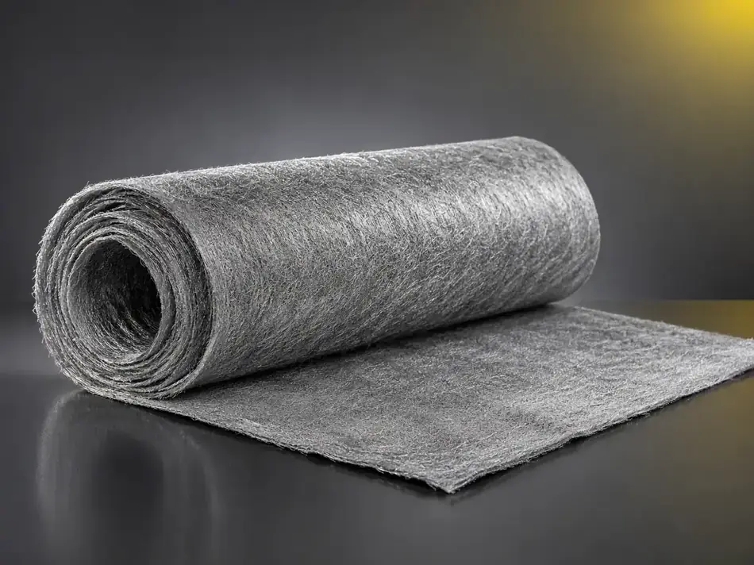
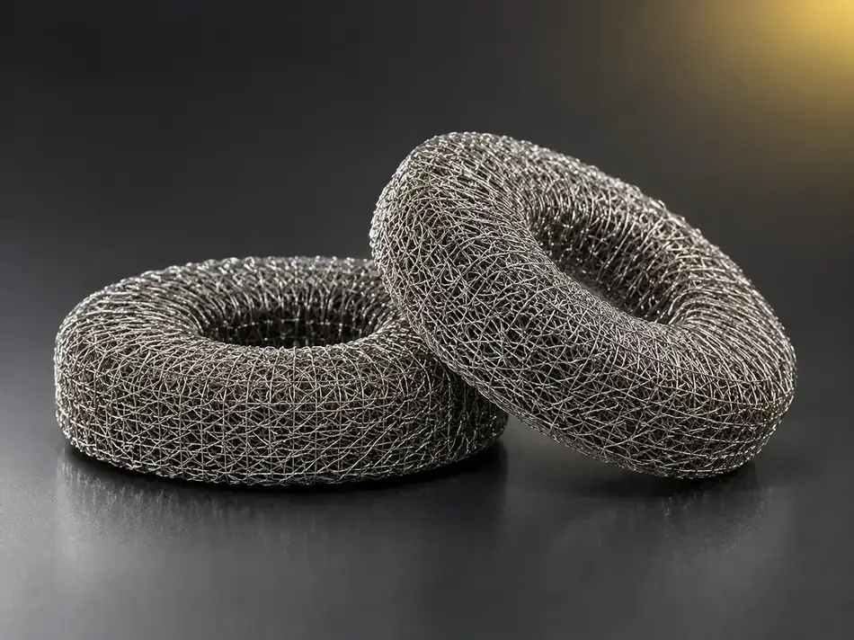
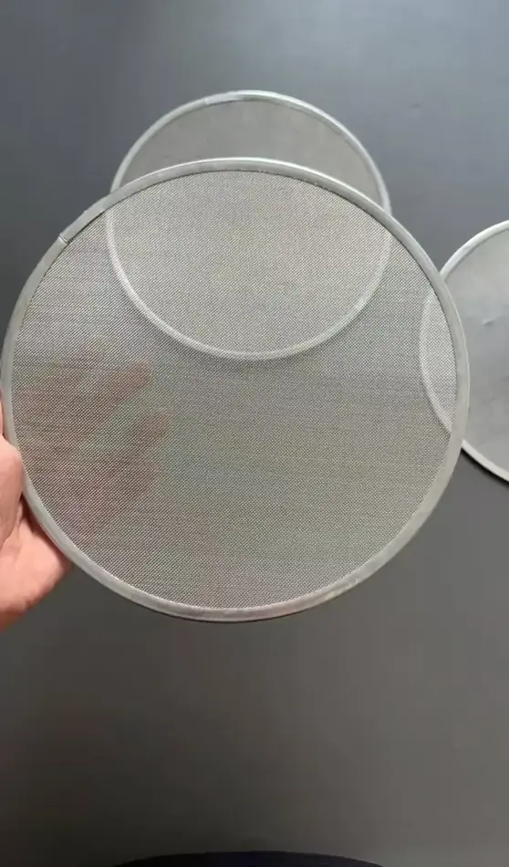

The strength of metal with the flexibility and porosity of a fiber — built for heat and thermal shock.
What this solution is for
- Ceramic porous materials are brittle, take thermal shock badly and have a short life.
- Burner surface temperature is uneven, with flashback or local overheating.
- Damping and sound-absorbing materials age and fail in high-temperature environments.
- A specific porosity, thickness or shape is required, and standard parts cannot meet it.
| Item | Detail |
|---|---|
| Target buyers | Burner and thermal equipment makers · exhaust treatment and catalyst substrate producers · water-electrolysis hydrogen equipment makers · industrial vibration, noise control and high-temperature sealing component makers |
| Typical conditions | Surface combustion, high-temperature gas distribution, thermal shock, vibration and noise, high-temperature corrosive filtration |
| Lead products | Metal fiber porous plate · metal burner plate · sintered felt · damping felt · specialty fibers including PBO |
| How it is verified | Sample testing, bench testing, small-batch machine build |
Priority order
Who we serve first, and why
| Priority | Buyer type | Why |
|---|---|---|
| A | Burner and thermal equipment makers | Metal burner plates and porous plates are mature applications |
| B | Exhaust treatment and catalyst substrate producers; industrial vibration and noise control component makers | Porous plates and damping felts match their requirements closely |
| C | Water-electrolysis hydrogen equipment makers | An emerging requirement, co-developed to the equipment specification |
Product fit
Candidate products and selection logic
Candidates are a starting point. Final suitability depends on your exact conditions, so we confirm it with samples and testing rather than on paper.
| Application | Candidate products | Selection logic |
|---|---|---|
| Surface combustion and thermal processing | Metal burner plate in FeCrAl, NiCrFe, titanium or stainless steel fiber | Even radiating surface, fast response and tolerant of extreme temperature swings |
| Gas distribution and fluidisation | Metal fiber porous plate, porosity 50–90% by design | Three-dimensional open-pore structure, weldable and machinable, resists thermal shock without fracturing |
| Exhaust treatment and catalyst substrates | Porous plate, sintered porous media, chopped fiber | Heat resistant and able to carry catalyst |
| Damping, sound absorption and high-temperature cushioning | Damping felt 2–3 mm thick, rated 350–1100 °C; needled felt | High damping, ageing resistant and free of outgassing in vacuum |
| Gas diffusion layers for hydrogen production | Titanium or nickel fiber felt | Co-developed to the equipment maker's specification |
| High-strength heat-resistant fibers | PBO and aramid specialty fibers | Complementing high-temperature conveyor belts, sewing thread and protective materials |
How we work together
- Shape, thickness, porosity and alloy are made to your drawing or sample.
- Build samples for bench or rig testing first, then move to small-batch supply.
What buyers verify
- Porosity, flow resistance and integrity after thermal shock.
- Uniformity of the combustion surface temperature and service life.
- Damping and sound absorption, and performance retention after high-temperature ageing.
When ceramics crack under thermal shock and foams lose strength, metal fiber offers a different answer. QL sinters micron-scale metal fibers into porous plates (50–90% porosity by design), burner media in FeCrAl, Inconel, titanium or stainless steel, and damping felts rated 350–1100 °C. They can be cut, welded and shaped to your drawing. Share your operating conditions and we will propose a material, build samples and support your bench testing.
In service
Products and applications




Tell us your conditions
Send us your operating conditions, and we will send samples.
Temperature, medium, pressure, filtration rating, resistance or porosity — give us the numbers you work with and our engineers will recommend a configuration, quote it and arrange samples for your own testing.